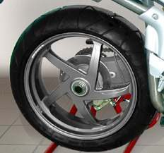

The rear wheel is held like the front one, with a drive added: a chain, belt or shaft. Before any nut is loosened, look at how the axle, the drive and the brake are fitted. The order of work depends on what is there.
Safety
- The bike must be supported so it cannot fall. Use a centre stand or a paddock stand. Do not rely on the side stand.
- Engine off, key out. The exhaust and brake parts stay hot for some time.
- On a disc brake, do not use the brake lever with the wheel out. The pads can pop out of the caliper. A piece of wood or steel between the pads prevents this.
You need
- The spanners and sockets for the axle nut, any pinch bolt, and the brake fasteners.
- The manual, for tightening values. Do not guess them.
- A phone camera. Photograph spacers, the chain run and the brake parts before taking anything apart.
Steps
- Look at the axle end. Find the axle nut, and any pinch bolt at the swingarm.
- Note how the swingarm ends. Some have open slots at the rear so the wheel can be pulled straight back. Some have a removable block held by a bolt. On others the axle slides in an adjuster plate.
- Find the chain. Loosen the axle nut and push the wheel forward to slacken the chain. Lift the chain off the sprocket. On a shaft drive or on some chain bikes the wheel pulls out of the drive and the drive part stays on the swingarm.
- Drum brake. Find the brake rod adjusting nut and the anchor bolt that stops the brake plate turning. Both come off before the wheel does. Count the turns on the adjusting nut if you will reset it, or mark its position.
- Disc brake. The caliper usually stays on the swingarm. Place the wood or steel between the pads.
- Single-sided swingarm. Some bikes hold the wheel on one side only, with one or several lug nuts or bolts. Remove any bags or silencer parts in the way, then remove the nuts.
- As the axle comes out, watch for spacers. They centre the wheel. There may be one, two or none. Keep them in order.
- On some older bikes the rear mudguard is hinged so it can swing aside. On most late models it is not.
- When refitting, follow the reverse order. Tighten the axle as the manual says, check chain slack (Check and adjust chain slack) and reset the rear brake free play.
Check your work
- Every spacer, nut, washer and split pin is back where it was.
- The chain is on the sprocket and slack is in range for your bike.
- The wheel is straight, spins freely, and the brake works before riding.
If it did not fix the problem
- Full removal and refitting: Remove and refit the rear wheel.
- Brake drags after refitting: Check for brake drag.
- Drum brake free play wrong: Adjust a drum brake.
- A rusted or seized axle or nut: Remove a stuck or rounded fastener, or go to a workshop.